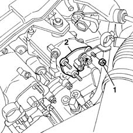
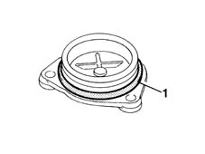

1036G49 rear camshaft seal, lh or rh - r r with mount and coil/s removed
- Path
- Procedures > 10 ENGINE UNIT > 1036 TIMING SYSTEM > 1036G camshaft (1) in top heads (2) > 1036G49 rear camshaft seal, lh or rh - r r with mount and coil/s removed
- Kind
- repair procedure (removal / refitting; the operation number is the code)
- Applies to
- engines: 1.6 16v; all production periods
- Interactive page
- https://sloeber94.github.io/elrnDB-fMltpl/en/#/2891240
Applies to: engines: 1.6 16v; all production periods
 Removing
Removing
 Refitting
Refitting1. Undo the retaining nuts.
2. Remove the rear camshaft cover.

Applies to: engines: 1.6 16v; all production periods
Refitting
Removing1. Remove the gasket from the rear cover.

Applies to: engines: 1.6 16v; all production periods
Fit the rear cover onto the cylinder head extension and tighten the retaining nuts to the specified torque.
 | Fastening | Component | Ø | Value (daNm) |
|---|---|---|---|---|
- | Nut | INTAKE AND EXHAUST CAMSHAFT REAR COVER | M6 | 0.9 |
Topics that link to this page (10)
- 1016B20 lh cylinder head extension - replace gasket
- 1016B24 rh cylinder head extension - replace gasket
- 1020D12 front crank shaft oil seal cover - r + r and replace seals
- 1020D18 front crank shaft cover oil seal - replace
- 1032B46 toothed drive pulley - r + r
- 1032B52 toothed driven pulley (one) - r + r
- 1032C18 mobile timing system tensioner - r + r for 24 valve engines
- 1032C32 fixed timing system tensioner (one) r + r
- 1036G10 camshaft controlling exhaust valves in top head - r + r with top head removed - includes replacement of top head
- 1036G20 camshaft controlling intake valves in top head - r + r with top head removed - includes replacement of top head if necessary